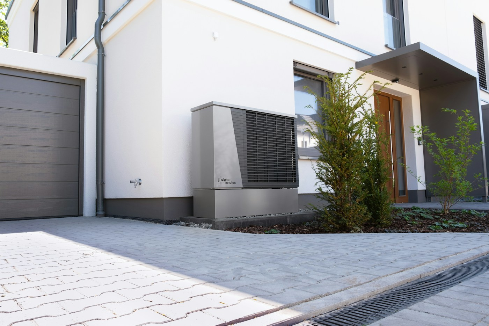
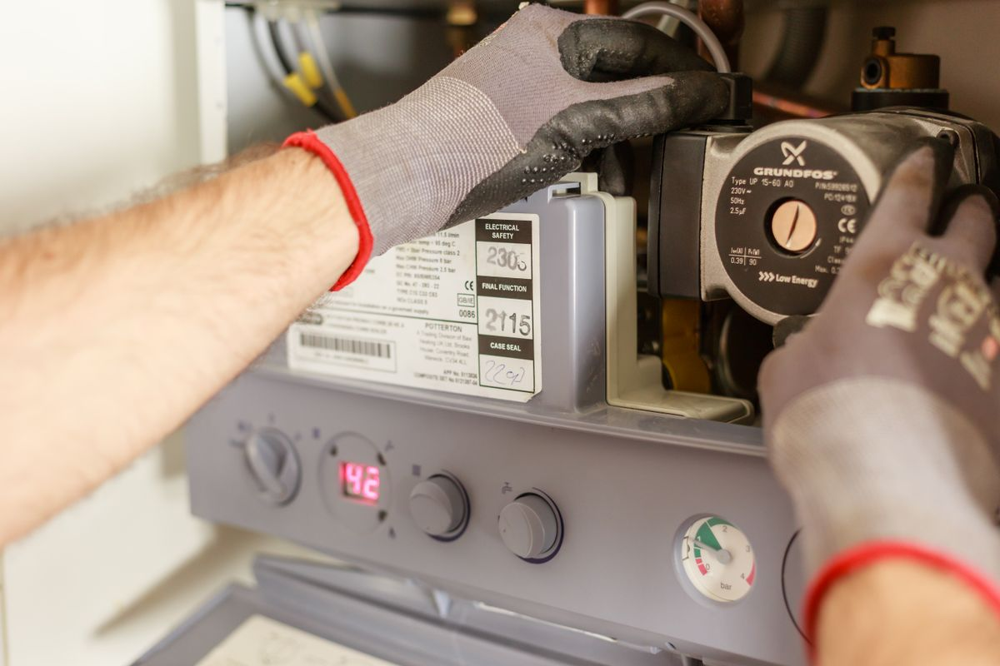
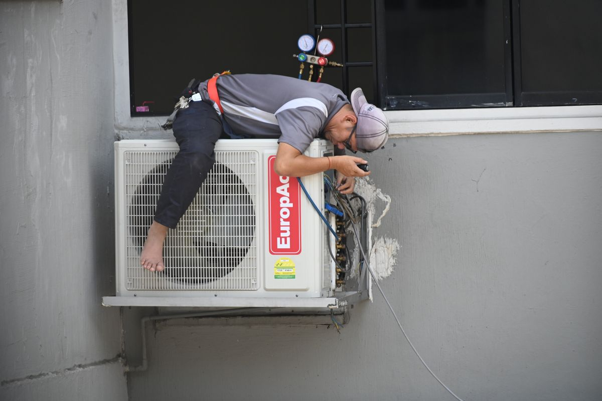

Insights
A little knowledge.
A more comfortable home.
Straightforward guides to understanding your heating, cooling and the decisions that come with looking after them.

Heating advice
Could a heat pump work for your Scottish home?
A practical starting point for understanding your home, your heating needs and the questions to ask at a survey.
Read the guide
Home maintenance
Your annual boiler service: what to ask and prepare
A little preparation can make a service appointment more useful and help you understand what was checked.
Read the guide
Cooling advice
Choosing air conditioning for a room you love
Comfort comes from the whole design: capacity, positioning, noise, controls and practical installation details.
Read the guideReady to Restore Your Home Comfort?
Tell us what your home needs. Take the first step towards a warmer winter, a cooler summer and a more comfortable every day.
Schedule a service